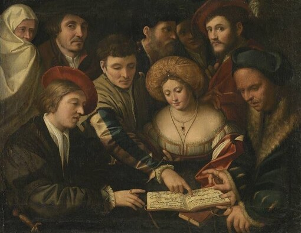
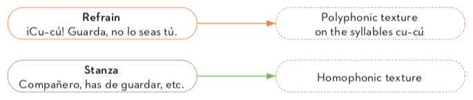

Chanson and Madrigal
As Renaissance sacred music was acquiring its "international" style, secular music also began to diversify, developing discrete styles that reflected individual countries or regions. During this era, the two dominant types of music were the madrigal in Italy and the chanson in France:
| Chanson | Lyrics in French, simple melodies, sung for the general public; used four or five voices and were written about various themes (love, satire, etc.). |
| Madrigal | Poetic lyrics in Italian; used four or five voices and were written mostly about love. |

WE LISTEN AND WE DON'T JUDGE: MADRIGAL AND CHANSON
Chanson
Listen to the following extract from Le chant des oyseaulx and answer the following questions:
Clément Janequin - Le chant des oyseaulx
- Why do you think the play has that title?
- What language is it written in?
Madrigal
Listen to the following madrigal by the composer Arcadelt.
Arcadelt - Il bianco e dolce cigno
How does a motet differ from this piece?
Villancicos & Fa-la-las
As you know, the madrigal originated in Italy and the chanson in France. This time, you’ll embark on a musical journey through two other regions – Spain and England – to discover new genres.
| Villancico | Lyrics in Spanish. A villancico consisted of two alternating parts, called the refrain (estribillo) and stanza (copla). It generally had a romantic or picaresque theme. This has no connection with Spanish Christmas carols |
| Fa-la-las | In England, songs containing musical parts developed on the syllables fa–la–la were popular. They became known as fa–la–la songs, as a result. |

Stanza it's like "copla" or "estrofa". Refrain it's the same as chorus or "estribillo".| Religious Christmas carols came into being when the Catholic Church adopted the people’s secular folk songs and changed the lyrics to spread the Christian message. |
In the case of the Fa-la-las, we have a new textural element: homophony. This occurs when all the voices or instruments move together at the same tempo, but sing or play different notes to form chords. In the following audio clips, you will be able to identify which parts are polyphonic and which are homophonic.
WE LISTEN AND WE DON'T JUDGE: VILLANCICOS & FALAS
Villancico
Listen to an extract from Cu-cú by Juan del Encina.
- Can you understand the lyrics of this Villancico? What is it about?
- Can you clearly distinguish between the refrain and the stranza? What is the musical texture of each part?
Fa-la-las
Listen to the following fa-la-la by the composer Thomas Morley...
Thomas Morley - Now Is the Month of Maying
- At what point in the piece does the texture change from homophonic to polyphonic?